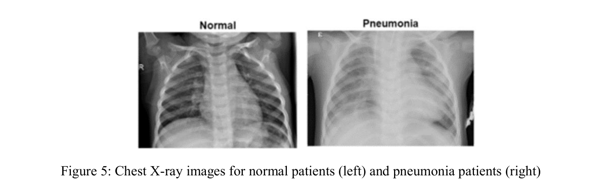
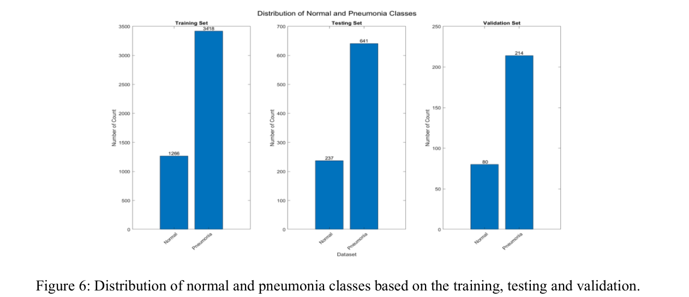
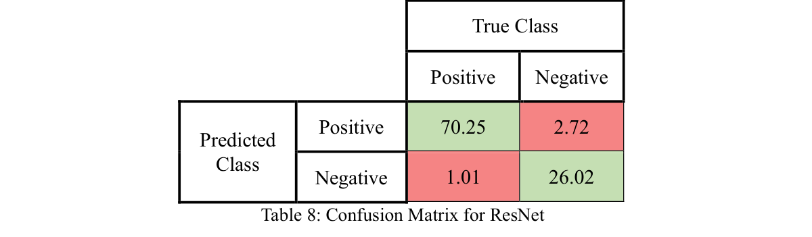

Pneumonia remains a leading cause of death for children worldwide, yet diagnosing it through X-ray interpretation is a difficult task prone to human error. I built this project to determine whether deep learning could provide a more reliable, automated screening tool to assist doctors in early detection.
As part of a four-person university research project, I focused on building and evaluating two of the models we compared: a custom CNN and a pre-trained ResNet50. I used a public dataset of nearly 6,000 paediatric chest X-rays, applying image augmentation (rotation, reflection, scaling) to improve robustness, and a 5-fold cross-validation strategy to confirm the reliability of the results.



I learned that in a clinical setting, simple accuracy is less important than recall, since missing a sick patient can be fatal. I also had to navigate significant computational limits, which taught me to use existing research to strategically narrow my focus before beginning the intensive training process.